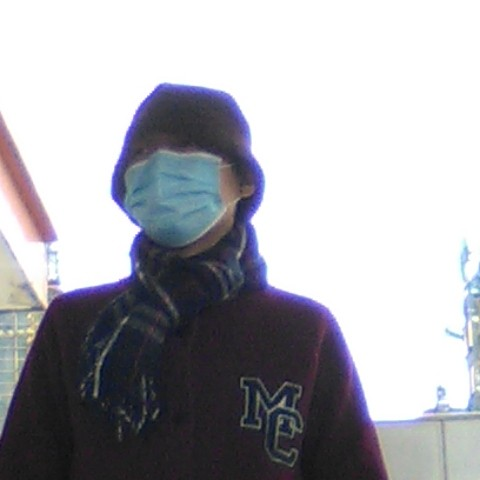

E T
中共党员，现为福州市东升小学英语教师。热爱教育事业。遵守教育法律法规和教师职业道德，履行教师职责。贯彻党的教育方针，遵循教育规律，潜心教书育人。对学生严慈相济，做学生良师益友。
教育格言：
用爱唤醒学生的心灵。
——东升小学官网
关于ET的身份，想必大家都知道——这里就不另外阐述。ET的衣服主打一个“老年装”——很土。另外，虽然ET的性格和其他老师一样：凶，但完全不是一个级别，简直无所不用其极,所以不应该是什么“对学生严慈相济”，而是“对学生凶狠残忍”；也根本说不上什么“良师益友”。
文件夹
ET的文件夹呈透明状，以纽扣固定。内有：
软尺
这东西不要太经典。
ET的软尺呈紫色透明状、长度为30厘米。ET专门用它来打学生的手，技术甚是高超、熟练。不过在六年级时，这个“习俗”逐渐消失。
因为ET用它频繁打人，所以时不时就会有一块软尺碎片在打人时飞出，落在地上（我亲眼看见过），以至于现在这把软尺的两角严重残缺，已经不能说是30厘米的尺子了。
ET软尺打人片段描写
只见ET突然停下，教室里讲话的声音也随之变小许多，大家都注视ET，观察她的动向。ET的手缓缓伸进那个透明文件夹，摸索片刻后，从里面拿出那把祖传的软尺，然后尽力往讲台一瞧，似乎要向同学们示威。
ET没说话，只是径直走下讲台，来到一个人跟前。ET用眼神示意：“来，手伸出来。”
那人自觉地起立，伸出左手。
“抬高！放平！”
“啪”的一声响，仿佛有人在扔摔炮，声音响彻了整个教室。
“啪！”ET又打了一下，然后回到讲台上，重重地放下软尺，继续上课。
而在五年级时，ET不是走到座位上打人，而是让被打的人来到讲台上再打，主打一个“自己不走一步”。
ET打人的次数因人而异。可能是1下、2下、3下，或者一连打上个十几下。
十几下的情况比较罕见，通常是那人触犯了ET底线、不服从命令或是ET打人时躲避。ET每打完一次都会说一句“来，手伸出来”，然后再打一下；也可能是边嘟囔边打。
不过，ET在六年级时并没有放弃打人习俗，她使用了竹制教鞭替代了软尺——还是该打人就打人。陈忠宇、邱子韩、吕楚鋆都是经常被打的典型。
卡片
在三、四年级时，ET上课时都会在文件夹里装几张卡片。具体的用法就是在教到一个新词时，ET就会拿出相应的卡片，在那里摇来摇去，同时带读单词：
带读后，ET会随机抽取学生读一遍该单词，请了几个后又让大家一起读（然后可能是男生读、女生读、一二组读、三四组读、分组读）。
有时候，ET还会让大家“play a game”。不过这些游戏都是ET自己发明的，提不上“好玩”，如“四面开花”、“唱反调”、“row by row”等，剩下的名字也不知道了。具体规则就是：
- 一个人读词，随后周围四个人也读。
- ET站在讲台旁把卡片不断抬高，同学们读的声音也逐渐增大。
- ET把卡片放在指定位置时，同学们喊“Bong”，其余位置都读单词。
- 一排接一排读单词。
- ET小声读词，同学们大声读词，反之亦然。
表格
ET在六年级上册开学初说自己印了一个表格，专门记录作业完成情况及小测成绩，家长会时会拿给家长看。
ET的文件夹里还有手机、英语书、新启航、笔这些东西，有时候还会把帽子套上塑料袋装进去。
背包
每次，ET都会带着大包小包进学校，又带着大包小包出学校。
午托时，如果ET看班，讲台上通常会出现ET的背包以及饭盒（不过后面被便当替代了）。如ET放下包后去洗手/上厕所，同学们就会去翻包。
ET的包有：
- 橙色亚麻袋
- 紫色芭比娃娃布袋
- 深蓝色宇航员布袋
- 水杯
- 帽子
- 英语新启航
- 英语报纸
- 手套
- 黑色皮包
- 口罩
- 卷纸
- 棉签
- 餐巾纸
- 卫生巾包装袋
- 深蓝色柱状包
- 挂面
- 排骨
- 青菜
- 虾米
这个包在六年级时消失。
在六年级时被宇航员袋替换了。
这个包前面还有一个小口袋，外表印有宇航员的图案。里面装着（包括但不限于）以下东西：
ET一个人就有两个水杯：一个是绿色玻璃杯，一个是粉色保温杯。据李诗彤介绍，ET喝水时，会将水反复倒到两个杯子里，等凉了才喝。包里装的是粉色保温杯。
这个包前面也有口袋，只不过打开的方式很独特。里面装的东西可以说成“卫生用品”，主要有：
这里面就是ET的便当了。ET拿出便当时，会发现还隔着一层塑料袋，底部有撕下来的新启航答案。打开塑料袋后，一个粉色的圆柱形保温盒显露出来，里面的菜却很平常，有：
然后就没了。不得不说，ET吃的都不怎么样，都是清汤寡水——这还是ET自己准备的！
还有一件事，就是一次ET坐公交车回家，刷卡后，ET来到一个空位旁，然后她自己却不坐这个空位，而是把包放在位子上，自己却扶着柱子站着。
服饰
的确，ET的衣服很土，具体来说就是那些老人装。ET的服饰有：
- 衣服
- MC外套
- 粉色（厚）外套
- 粉色（薄）外套
- 绿色大褂
- 肉色格子衣
- 红色毛衣
- 浅蓝花朵衣
- 深蓝外套
- 肉色外套
- 紫色绣花裙
- 鞋
- 足力健
- 寿鞋
- 老北京布鞋
- 黑色运动鞋
- 肉色洞洞鞋
- 老人健步鞋
- 帽子
- 大便帽
- 蝴蝶结草帽
- 紫色帽
- 肉色花帽
- 更多
- 红色围巾
- 紫色手套
- 裤子
- 粉色内衣
- 眼镜
- 花朵袖套
- 彩虹雨伞
- 手表
ET冬季最经典衣服。整体呈紫色，外套使用纽扣，下方有俩口袋。衣服前面印有“MC”字样，背面有“Music”字样（由此可推断，“MC”是“Music”的缩写），“u”下面有一只手，“ic”上面有一个球。ET穿这件衣服时，通常不扣下方的扣子。（见下图1）
见下图2。
ET夏季必备外套。这件外套带有帽子，是拉链式的。每次进班，ET会把帽子戴上，拉链拉紧，并戴上口罩，裹得严严实实。
ET穿了3年的古董衣服。绿大褂图片参考东升官网。
见下图3。
见下图4。



ET最经典的鞋子，呈桃红色。
因鞋子前面有一朵大花朵而被李诗彤称为“寿鞋”。
ET只穿过一次。
其实就是棕色帽子……（ET上课时，还会把该帽子放进塑料袋）
帽子呈土黄色，后面有蝴蝶结。
MC外套标配。
目前只发现ET戴过一次（放路队时）。
ET裤子好像只有一件黑色的……
偶然间发现的。
时戴时不戴。
六年级时消失
怕冷
不难看出，ET天生怕冷。夏天，同学们都把空调调到最低温，风扇开五档——ET显然讨厌这种环境。所以，ET每次进入教室时，首先会检查空调温度，如果太低的话，就会分为两种情况：
- 在盛夏时，ET会把空调调至27度（六年级上学期是29度）
- 不是盛夏时，ET会直接关闭空调
另外说一下，ET是只看空调上的温度的。我为了防止ET挑空调，就把它调成21度，然后在“1”上方贴一个横线，假装是27度，结果ET真没发现，就这样吹了一节课。
其次是关风扇，这点没什么好说的。
ET怕冷还体现在衣服上。夏天，同学们都穿短袖，可ET仍然穿着长袖、长裤，还裹着那件粉色外套。这还没完，ET进教室时，她还把外套的帽子戴上，拉链拉得紧紧的，还不忘带着口罩，整张脸就眼睛露出来。据李诗彤说，ET在办公室里也是同样的装备。
电子设备
课件
ET的课件一般都是自制的，而且特垃圾。像图片这些东西尺寸都参差不齐，有的带有红框，特难看，还经常超出背景给的框。
当然，ET在六年级下学期前，经常使用樱花背景，之后才换成其他背景。（不过布置作业的背景始终是樱花的——到现在也没有变）
还有，在六下时，ET似乎很喜欢用“两侧模式”，每次打开课件后都要去设置。
微信
六（1）有三个微信群，分别是：
- 六年一班
- 六年一班家长群
- 六年一班（小群）
而今天的焦点就是这个“六年一班（小群）”
据李诗彤介绍，这个群原来是黄老师的，结果ET来了后，就把它改成了“小群”，专门用来发趣教、作业、课上捣乱的人……等等有关英语的东西。
而且，她还很注重这个群的“清洁”，不让别人发与学习无关的东西。
网课
疫情期间，ET不仅会让大家看现成的网课，还会用钉钉进行直播。直播时，ET就摆一张写满字的牛皮纸，让大家把某道题的答案“敲在屏幕上”（也就是发送弹幕）。
两侧模式
六年级时，ET每次使用课件前都会调到“两侧模式”使用。
语言攻击
搞笑语录
详见：名言
ET说过一些搞笑的话，比如自相矛盾的：
和一些不合事理的：
还有，在跳蚤市场活动前，面对李诗彤给的糖，ET的反应是这样的：
长篇大论
一旦有学生让自己极度愤怒，ET就会展现出她的“口才”——或是思想品德教育，或是说气话。例如：
威胁
ET一言不发，就会开始威胁学生，而且经常采用“如果……就……”的句型。
笑
其他老师，通常都是冷若冰霜，同学们做了什么事，她们只会批评。ET虽然也是这样，但还是能经常看见她的笑的。一次ET被逗笑，同学们便起哄，ET就默默地比了一个“六”的手势。
猫咳
ET的咳嗽也跟大家不一样。别人一般都是捂嘴后咳，ET的手却握成拳头，搭在鼻子前，并闭紧嘴巴，不让气体喷出。这样就导致ET咳嗽时会发出一种怪异的声音，导致同学们哄堂大笑，这种现象也被李诗彤成为“猫咳”，因为其声音和猫的咳嗽声相似。
招牌动作
ET在课上总是会习惯性地做一些不必要的动作，次数多了，就被发现了，于是同学们将其称为“招牌动作”。例如ET四、五年级时最经典的动作：ET做这个动作时，会将左手放在肚子前，右手搭在背后，然后摸一会儿。
ET还会把手搭在额头上，并往上摸，似乎要查看自己的发际线。又或者是把手捂在嘴巴前面，拇指放在鼻子上方。这两种动作又是单独出现，也可能交替出现。
ET的另一个动作则是将两手分别放在肚子两侧，大约0.5秒后又放到背后。
六年级下学期时，ET出现了一个新的“招牌动作”，并一跃成为同学们讨论得最多的动作。ET看手机时，会将一只手垂直搭在自己脸的中间，一副基督教教徒的样子，这也被大家称作“手背眼睛”。
经典
版本过低
ET在刚接手我们时，使用的是普通的视频。后来就改成了“f”（即“Abode Flash Player”的简写），每当到“Listen and follow.”时，整个课件页面都几乎全白。
虽然“f”有诸多好处，但有一点很致命，就是“版本过低”。
每当这时，ET就只好打开英语书，自己念课文。不过有一次，ET似乎找到了升级方法，后来这次版本过低就成了经典。
以下是《ET日常》中的选段。
这天，ET点开了课文动画。一如既往地，出现了正常播放的课文动画。ET把进度条拉到最左边，然后重播，立刻听见了Peter的声音。那声音响彻云霄，似乎要把房顶掀翻：
“Hello!W……”
这时，声音戛然而止。但原因既不是音响坏了，也不是ET把声音关了。窗口上出现了一段熟悉的文字：该版本过旧，不支持运行，请升级后使用，查看升级详情。
什么？不是已经升级过了吗？怎么又来了？
“哈哈哈哈哈哈哈哈哈……”同学们哄堂大笑。有的人还鼓起了掌，还有的人喝着倒彩。
不过，ET并没有翻开书自己念，也没有去点击链接。只见她淡定地关闭了窗口，又关闭了课件，打开了360。她转过身，看了看那几个起哄的同学，那些人立刻识趣地闭上了嘴。与此同时，首页出现了许多游戏。
“哇！游戏！”
“哇！我们玩游戏吧！”
“哇！”
“哇！游戏！”
“我们玩游戏吧！”
她进入升级页面，点击“全部升级”，上面的进度条和图标就滚动了起来。
原来，ET就是在这里升级了f。
ET转身，看着同学们。
“邱子韩，带上你的书，站到这边来。”
ET看着升级页面，上下滑动着，看上去面露难色。
“老师U盘内存快不够了。……老师U盘内存快要不够了！”
ET想要掩盖她悲观的心情，于是转身整了整纪律：“Attention one two.”
“Three four.”
ET又转了回去，伸手去点课件，想看看f到底升级好没有：“Now look at here……”
就在她快要点到的那一刻，突然出现了“迅雷影视”的窗口，ET先是一惊，然后又不耐烦地关掉。可是，刚关掉，却又弹出了“Windows防火墙”的提示窗口。
“阻止应用部分功能！太棒了！太棒了，太棒了……”
面对雪崩般的窗口，ET的手指已经不知该放到哪里了：她刚关掉提示窗口，又有某软件弹出了“安装成功”的窗口，好在那个窗口没过多久就自动消失了。不过，那个窗口刚消失，“迅雷影视”就又来“补空位”了……一个个窗口弹出又关闭，一个个应用升级完毕——但唯独没有f的升级页面。
不过ET觉得f已经升级好了，于是打开课件，点开f。课文动画一闪而过，立刻就被更新提示盖住了。
“啊哈哈哈哈，哈哈哈……”
ET只好再次进入升级页面。
“十九分钟下课！”
这时，屏幕上弹出了“优酷视频”的首页，最上面有一张电视剧的图片，只不过还没有加载好。ET关掉了。不过定睛一看，发现“优酷视频”的图标还在下面的信息栏里，搞不好待会儿又会弹出些什么。于是ET又打开了“优酷视频”，再关闭——图标还好好地在那儿呢。
“看电视！”
“放——电影！”
“看电影！”
ET第三次打开了“优酷视频”，上面的图片也加载好了，显示出一个穿西装的男人，一个穿白色棉袄的人和一位像是公司高管的女人……
同学们尖叫道：“啊啊——”
ET再关，再开——屏幕上又显示出了刚才那张图片。
“啊——”
ET妥协了，她关掉窗口之后，任凭它出现在那儿。还好，它没弹出什么东西。
ET又看了看升级页面：只有绿色的进度条在懒洋洋地滚动着。她看上去不是很乐观，可能还没升级好或者根本没开始升级。ET想：都升级这么久了，还没好吗？
“老师，你不要垂死挣扎了。”
正想着，又有一个网页弹了出来，加载了一会儿，显示“404”。
“网页无法访问？！啊哈哈哈，哈哈哈……”
ET又点开f——不用想，肯定是“版本过低”。点开后，之间“更新提示”蛮横地挡在课文动画前面，似乎在说：“哈哈哈，你是别想看到课文动画的！”
接着，笑声如期而至。
ET并没有去管。现在，同学们的纪律已经没有f的升级重要了——此时，她的眼里只剩那个进度条与那个线条优美的f，了，哪有空去管人呐！于是，同学们开着玩笑：
“病毒来了！”
“病毒来咯！”
ET目不转睛地看着升级页面，急得像热锅上的蚂蚁。她看着一个又一个的软件升级成功，都快要跺脚了。什么时候才能有f呀！……
不行，没时间了……
……只能赌一把了！
ET抱着最后一丝希望，点开了f。
“不要垂死挣扎了呃呃呃呃……”
胜负在此一举！
可是——
版本过低。
“不要垂死挣扎了呃呃呃呃……”
ET终于放弃了。她拿出书：“Open your English books……”
这一次，ET浪费了二十分钟。
后来，“f”逐渐消失在大家的视野中。
打陈昊圻
这也算是ET为数不多的打人事件了吧。一天，ET发现陈昊圻在抽屉地下玩东西，于是让他把东西放到讲台上来。陈昊圻不放，ET就把他拽出来，在过道上拉来拉去。具体表现就是：
ET的声音提高了八度。这时，陈昊圻正站在自己的座位旁，ET正站在自己前面，手握拳，盯着自己。突然，ET手臂发力，把陈昊圻的头用力一推，手臂伸得直挺挺的，使得他的头一歪。这力度，不去参加拳击比赛真是可惜了。
“……你干什么啊！”
看，ET的口罩都在往下掉！
有人小声地笑了。
陈昊圻走到讲台旁，ET的眼睛、身体也同步跟着他。陈昊圻伸手，想把玩具拿回来。可玩具还没拿到，却被ET打了个措手不及。
ET抓住陈昊圻的脖子，往陈昊圻座位的方向就是一推。陈昊圻眼中的事物飞快变化着，从玩具转移到看戏的同学们，然后变成了大理石地板，他赶紧扶住了桌子才没有摔倒。
这还没完，ET紧接着又抓住陈昊圻的衣服，把他一把拉了回去，露出了蓝色的内衣。ET觉得这样抓不太牢，于是在0.1秒内换了个地方抓住，然后继续拉。ET动作敏捷，力大如牛，完全没有其他老师的弱小、纤细；完全没有老年人的迟钝、无力。她实在不像一位老师，更像一个大妈。陈昊圻的手飞了起来，在空中划出一道优美的弧线，另一只手连忙抓住讲台，身体却还是向后倒去。
“我叫你那个东西拿这么久啊，哈？！”
陈昊圻还没缓过神来，ET就第n次抓住他的衣服，第n次推了他一下，他终于站定了。陈昊圻转向ET，发现ET正火冒三丈、怒发冲冠地盯着自己呢！忽然，ET又伸手，抓住了他的衣服。
“你不用来了，出去！”
ET一只手抓住他的衣服，另一只手直勾勾地指向门口，然后，ET把陈昊圻推向了讲台。
“明天开始不用来了！”
陈昊圻又扶住了桌子，蹦了一下，站在了自己座位旁，手里拿着英语书，转向ET。
ET还盯着陈昊圻。她走上讲台，拉了拉口罩：“站到……卫生橱旁边。”
接着，ET一拍讲台：
“过分了哈？！”
手举起来
不得不说，这是ET“经典中的经典”。周五最后一节课时，ET教大家“Women's Day”这个单词，结果同学们都说它读“吴一鸣's Day”，为此多次起哄，ET忍无可忍，便让大家举起双手，后来还拖课到了清校。（详见下面《ET日常》选段，有改动）
这节课是一周的最后一节课，所以同学们都归心似箭，想早点回家玩个痛快。要是其他老师还好，按时放学有保障，可偏偏是ET……
“如果还在讲话，可以第四节、第五节课留下来讲。”
“没张嘴的人，下课到我办公室念。”
“要是有一个人讲话、走神，我们就延迟放学。”
“不想早点放学的话可以全校最后一个走。”
……
以前，ET都只是说说；而这次，ET竟然动真格了。
ET正在讲台上讲课。
师：“Now read after me:New Year’s Day.”
生：“New Year’s Day.”
师：“Women’s Day.”
大家一听：怎么这个“women”听起来这么像“吴一鸣”？大家笑了起来。
ET最讨厌这种情况了——这可是对自己的极不尊重啊！为了防止声音继续增大，ET不得不使出了“必杀技”。
“来，全体起立！”
同学们站了起来。
“必杀技”就是有用，声音果然小了下来，教室里又恢复了平静。ET见声音减小了，赶忙让大家坐下（ET不想耽误时间），然后继续上课。
师：“Women’s Day.”
生：“吴一鸣’s Day！”
结果，刚平静下来的教室又沸腾起来。
“还有这种词儿？哈哈哈……”
“六！”
“吴一鸣！吴一鸣’s Day！”
“来，你，”ET指了指讲台左侧，“蹲到这里来。”
那个人灰溜溜地走了上来，蹲到了ET指的地方。
ET什么时候学到这招的？难道是被CT感染了吗？
师：“Read after me:Women.”
生：“吴一鸣！”
师：“Women’s Day.”
生：“吴一鸣’s Day！”
紧接着，声音如期而至。
“哈哈哈哈哈……吴一鸣’s Day！”
“吴一鸣哭了！……”
ET第二次喊道：“全体起立！”
声音第二次小了下来。
这时，ET看到了一个嬉皮笑脸的人。
“来，你，”ET指了指讲台右侧，“蹲到这里来。”
现在，ET的左右两边各蹲了一个人，可谓是“左右护法”。
“坐下。”ET继续上课。
师：“Now read after me:Women’s Day.”
生：“吴一鸣’s Day！”
又有声音了……
ET第三次喊道：“全体起立！”
声音第三次小了下来。
ET继续上课——只不过这次她没叫同学们坐下，而是让大家同自己一起站着。ET认为，只要站着，同学们就会安静一点；一坐下，这种效果就烟消云散了。
师：“Now read after me:Women’s Day.”
生：“吴一鸣’s Day！”
师：“Women’s Day.”
生：“吴一鸣’s Day！”
全班又又又沸腾了。
“吴一鸣’s Day！”
“吴一鸣’s Day！”
“吴一鸣’s Day！”
……
看来，这种效果还是烟消云散了。
ET把牙咬得吱吱作响，把拳握得紧紧的，把脸板得像个冰箱。是啊，这些方法已经不足以惩罚这群放肆的“小兔崽子”了。要罚，就得用更创新、更折磨人、更痛苦、更有针对性的方法才有效果。可是，要用什么方法呢？站起来可不行，因为他们已经在站着了，况且这种方法已经不管用了。一种种方法在ET脑中浮现，又被否决了。只有这种……
ET动了一下，看来她已经想好了。
“来，所有人，把手举起来！”
“举高！”
在ET眼里，举手就代表“投降”，有着比较好的“寓意”；而且长时间举手，会导致手臂酸痛，好让他们长长记性……此法，妙不可言！
同学们已经举起了双手。教室仿佛变成了由手臂组成的森林，一只手就是一棵树，五十多双手汇聚成一百多棵树。
ET开始在人群中巡视。只有她看到有人没有把手举高就会用棍子或者自己的手“帮助”他。ET不停地喊道：“举高！”但就是有几个同学举不高。为此，ET还特地示范了一遍。
“看过来，”ET举起双手，手臂直得像一根电线杆，“要这样举，知不知道！”这一切动作，ET显得都很自然，丝毫没有第一次做时的生疏，这事在ET看来，就跟吃饭、睡觉一样平常。
同学们纷纷笑着，调侃着ET。教室里的声音此起彼伏，丝毫没有被惩罚的感觉。
“安——静！”
这样有用吗？同学们还不是先安静一会儿，然后又开始讲话吗？
不过没一会儿，声音还是小了下来。只听见ET时不时“帮助”他人的声音。
同学们把手举得高高的，看起来应该抱怨ET才对。可乍一看，发现大家都在憋着笑——当然，绝对不能让ET发现，否则，后果可是不堪设想啊！
这么荒唐的事，ET想了，ET实施了，ET认认真真地实施了。至于结果，嗯，ET肯定想都没想到。
但每当看到ET那严肃的表情时或者两位同学对视时，那个人就会觉得更好笑了，然后脸就会从极力憋笑的状态慢慢舒展开来。一不小心，可能就会笑出声来，声音则传到每一个人的耳边——包括ET。在这教室里，静得连一根针掉在地上都能被听见，这声音，怎能不被ET察觉？那个人只好“亡羊补牢”，再次把笑容给憋回去，暗想：还好，ET没注意到我。
过了一会儿，大家的戒心逐渐放下，教室里的气氛轻松了许多。有些人在ET转过身后放下了手，等ET看向自己时再举起来。有些人甚至开始在ET背后竖中指、电摇，ET转过身后，那些人瞬间恢复了手举高的状态，脸上则一直挂着笑容。
开始，ET还会不时提醒某个人把手举高；可随着时间的流逝，这种任务也变得越来越枯燥了，教室里陷入了死一般的沉默，空气似乎凝固了。
唯一发出声音的东西是风扇，它的转动声清晰地进入每个人的耳中——没有笑声，同学们已经笑够了。不过，这事还是很好笑，只不过暂时不想笑了而已。
唯一在动的人是ET，只见她背着手，手里拿着根棍子，表情依旧是那么严肃——没有人在动，大家电摇ET已经腻了。现在，看看别人，就会发现那些人的动作就是自己的镜像。
每个人看着ET，ET看着每个人。
这时，ET终于打破了沉默。但ET既没叫“手放下”，也没说“坐下”——她的话的内容还是在惩罚人，只不过罚的人只有一个：
“来，陈彦豪，站到黑板前面。”
对于刚才蹲到前面的两个人，ET并没有放任不管，她叫那两个人起立，然后也让他们举起了手，还不时去管管他们：
“手举高！”
“会不会举？不会我教你！”
“不要靠在黑板上！”
好了，言归正传。陈彦豪的确听ET的话，站到了黑板前面——只不过，他是模仿青蛙跳过去的。
同学们再也憋不住了，纷纷笑出声来。
“笑什么！”ET指了指同学们，然后转过身：“怎么走的？回到座位上，重新走一遍。”
“啊？”陈彦豪回到座位上，模仿袋鼠跳了过去。
“回到座位上，重新走一遍。”
陈彦豪朝ET做了个鬼脸：“啊，还不行吗？！”
“快点！三！二！一！”
陈彦豪终于正常地走了过去。
ET回头，对着几个正在笑的人说：“谁还在笑？把手举高了！”说着，ET又拔高了几个人的手。
之后，一切又陷入了沉默。
过了好久，ET终于叫人坐下了。
不！准确来说是叫人一个个坐下！
同学们为了可以早点坐下，于是站得更直了、手举得更高了。
谁知ET却只叫好学生、听话的学生坐下。而对于那些成绩差、爱捣乱的学生呢？即使你站得比好学生更直、手举得比好学生更高，ET还是视若无睹。只见空中的手——好学生的手——逐渐减少，站着的人——站着的好学生——陆续坐下，而没坐下的人则越发烦躁。
一个——又是一个！
终于，好学生都坐下了。那些站着的人本以为该轮到他们了，谁知，ET却说：
“这些站着的人，这周末回去第七单元单词抄四遍，课文抄两遍。”
此话一出，便引来了同学们（站着的人）的抗议。
“啊？！”
“为什么！”
“谁会去抄哦！”
“‘啊’的同学，回去单词抄八遍，课文抄四遍。”
“啊？！”
“抄这么多遍！”
“我——靠！”
“跟傻逼一样！”
“来，你，还有你，你们两个，这周末回去单词抄八遍，课文抄四遍。还有谁在讲的，可以跟他们一起去抄。”
说着，ET又转向讲台上的三个人：“你们仨也是，回去单词抄八遍，课文抄四遍。”
良久，ET终于叫全班都坐下了。
大家一坐下，就纷纷开始吐槽ET。
“我的手都酸死掉了。”
“就是，站这么久。”
“ET脑子是不是出问题了呀？”
“我诅咒ET全家死光光！”
“就读个单词也要罚站！”
“我刚刚都没起哄！”
“还抄单词课文！”
“我们都不要抄！谁抄谁小狗！”
……
但大家都没想到，事情远远没有结束。
终于下课了！
大家纷纷开始收拾书包，想着家里的游戏、iPad以及香喷喷的饭菜，有些人已经收好书包，将它放到桌上了。可偏偏这时，ET无情地开口了。
“刚才你们在那里大喊大叫、捣乱，浪费了时间，所以现在要把刚才的课上完才能放学。”
话音刚落——
“卧槽！”
“哎呀！真的很讨厌！”
“真是的！”
“自己在那里罚站还说我们！”
ET摆出一副“继续讲”的姿势：“来，继续讲，我们第四节、第五节留下来讲个够，现在开始讲。”
教室里安静了下来。
同学们嫉妒地看着一列列路队从走廊经过，兴奋地聊着天。教室一间间暗了下来，校门口不时传来“X年X班，同学们再见”的声音和一阵阵口号声。天色逐渐暗了下来，还飘着几朵乌云，看起来好像快要下雨了。
再看ET——她在那里装腔作势地说：“讲呀，继续讲呀！刚才没让你们讲时不是讲得很起劲吗？怎么现在叫你们讲了又一声不吭的？”声音显得非常突兀、非常刺耳。
不知过了多久，ET又开始讲课，还说：“讲完课才能放学。”同学们则无精打采地配合着。好不容易把课讲完了，同学们都长叹一口气。这时，ET把PPT翻了一页，屏幕上赫然出现了几道练习题。
“Now open your English books.”
“啊，还有？！”
“不是已经上完了吗？”
……
ET听见声音，于是课也不讲了。她双手交叉着，放在胸前，一动不动地站着，微笑着看着大家抱怨——这是ET的经典行为。就这样又过了三分钟左右，同学们才安静下来。
“要所有人都写好才能放学。”于是，那些收好书包的人只好极不情愿地拿出英语书和笔盒，在上面随便写了几个字母。
“第一题，瞿明爔……”
又过了好久，课终于全都讲完了，看着ET关掉了课件，全班又沸腾起来……
结果，ET又是那么一站，然后又笑眯眯地看着大家了。
“等大家都安静下来了，我们再排队。”
ET的话就像一根导火索，“轰”地引燃了炸药。抱怨声反而更大了。
就在这时，清校铃响了。
抱怨声又升高了一个等级。
有的人呢，甚至写起了作业。
窗外的天已经黑了很多，似乎在酝酿着什么。
同学们也抱怨不起来了，于是纷纷闭上了嘴。而ET依旧木头人似的站在那里。
听，楼道里传来了脚步声。
越来越近了——
一个黑色的身影出现在门口，同学们不约而同地看向那个人——ET也不例外。
ET的拖堂行为甚至引来了领导！
只见他慢悠悠地走进教室，走到了教室后头。
“你们看看自己把谢老师气成什么样了……老师也想早点下班，哪里想一直待在这儿呢？”
ET一反刚才严肃的语气，说：“对，老师其实也想早点回家。”听听这声音！就像一位给幼儿园小朋友讲故事的阿姨——多么温和，多么小声！简直是一只披着羊皮的狼。想想ET刚才牛气冲天的样子吧！
领导说：“这周末回去，每个人都写一份深刻的检讨，下周一统一叫到我办公室。”
（周一时，没有一个人写检讨，没有一个人抄单词。）
“谢老师，让他们排路队吧。”
领导在上，ET哪敢不从！
（其实，如果没有领导出面，ET很可能会继续拖堂——甚至拖到六点。ET还不是怕被领导叫去喝茶……）
“来，所有人，收拾好书包，到外面排队。”
于是，大家在全校老师的注视下，走出了学校。
天已经黑了，只有月亮若隐若现，向大地洒下一束银色的光芒。
今天，ET创造了纪录——全校拖堂最久的纪录。
师生互怼
这主要是ET的嘴皮子在动，没人将完整的过程记下来，主要原因则是午托时别班同学讲话，还怼了ET，导致ET发怒。不过，像“你以为你很拽呀？我拽起来比你更拽！”、“不要给脸不要脸！”系列的名言却流传至今。
思想品德
这也是ET的“嘴皮子工程”，具体起因就是ET因郑权楷抱作业的问题而叫来别班学生，并在课上对大家讲道理、辱骂，还说出了“你们这是思想品德的问题”这个名句。
一怒之下
话不多说，直接上内容！
该内容选自《ET日常3》。
随着眼保健操的结束，同学们睁开了眼睛，看到ET正站在讲台上——这节又是英语课。
同学们并没有感到惊讶，因为这节本来就是英语课。但是当看到ET手中那白花花的试卷时，同学们可就憋不住了。
“啊？”
“考试！”
ET数着卷子，然后直接无情地丢了下去。
“来，翻到第一面，开始做听力。一，听音……”
当做到第二题（听音，排序）时，有些人喊道：“这个图片看不清！”
ET停下来，看了看题：“来，第二题的第二部分，这个是蔬菜……”
“啊？”
“这不是答辩吗？”
“这是蔬菜？”
接着，传来一阵惊天动地的笑声。
ET突然放下卷子，快步走向第一组后面，手里拿着软尺。
“你刚刚有没有笑？”
“我没有！”
“还说不是你！”
“我没有！是陈锐讲的！”
“我刚刚都听到是你讲的！”
“就是他！”
ET彻底被激怒了。她猛地把陈睿卓从座位拽到了过道上：“哈，你还狡辩呀？来，去林老师办公室继续狡辩！”
ET一边说，一边试图把他拽向门口，不过只拽了一点距离，于是她又举起软尺。
陈睿卓想要挣脱ET的手，可是ET却死命抓住他的衣服不放，并且另一只手努力寻找着突破口——寻找打他的机会，但是效果甚微。于是ET也不找什么手了，直接对着他的手臂一阵猛抽，软尺在衣服和桌角间来回摆动，发出一声声轻响。打了一会儿，ET愣是没打到手，于是飞速把抓住衣服的手松开，转而去抓他的手。接着不等找准位置，就打了一下又一下，嘴里还不停吐出一句句气话。
突然，ET猛地松开他的手，转而抓住了他桌上的新启航，往门口用力一扔，新启航便消失在走廊，整个过程不到一秒。
“哇！”
“哇！”
“ET高空抛物！”
“牛逼！”
“ET完了！”
此时，陈彦豪也插嘴道：“ET高空抛物！我要去告校长！”
ET整个人都快疯了。她走到讲台，用软尺对着陈彦豪：“走，去告啊？！现在就去告啊？！”
“来，林煜昕，去叫林老师过来。”
不到半分钟，林煜昕就带着MT走来了。ET一见到她，就开始“控告罪人”：“刚才陈睿卓还有陈锐在考试时捣乱，然后XXX、XXX、XXX以及陈彦豪在旁边起哄。”
MT对那几个人进行了一阵严厉的批评教育，陈睿卓却说：“谢老师刚刚把陈睿卓的新启航扔到了楼下！”
ET心里一紧，但随即恢复了淡定，对MT解释道：“我一怒之下把他的新启航扔到了楼下。”
MT看着陈彦豪，又增添了几分怒气：“他为什么不扔别人的，就要扔你的！……”陈睿卓哑口无言。
接着，又是一阵批评教育，然后考试就继续了……
回家的路
点击这里观看！这个就是ET给大家看微电影《回家的路》，然后《回家的路》就成了ET的一个“关键词”。
自习
由于同学们太吵，导致ET无法上课，ET非常生气，还说以后再也不来我们班上课了。结果后面的英语课上，ET人虽然来了，但是一直都在看那本书，然后就让同学们做考卷、抄单词，或者自习。好几节课ET都是这么“水”过去的。而且，据悉，二班也出现了这种现象。
后来，在家长群中，各个家长在郭浩轩家长的动员下，纷纷“吐槽”ET的行为。
罚站
ET喜欢罚站，而且罚站方位还不同，有：
- 单人站
- 站后面
- 站讲台旁
- 站门口
- 全班站
这没什么新奇的。但有时候ET会罚林煜昕、陈诺等人起立，这时同学们就会大呼小叫。
四、五年级最经典手段之一，有时候一节课下来，后面已经挤满了人。具体情境如下图：
ET阴着脸说：“来，你，起立，站着；你，先拿着书站到后面去；你们这一桌，也站到后面去，一个站一二组过道，另一个站三四组过道……”
手举起来事件中，ET的旁边就站了两人，“左右护法”。
叶宸铭、陈彦豪都是这一类型的常客，在六年级时，ET学到了CT的精髓，让人蹲在门口之事时常发生。
全班站的典型例子就是手举起来事件。不过，在六年级时，ET开发出全班站的全新“玩法”：ET会让大家起立，然后坐下，再起立，再坐下……
隔壁/五楼办公室
办公室是ET惩罚学生的好地方。当ET发现“目标”时，会说：“林煜昕，带着他去隔壁找林老师。”或者是“你，带上英语书和作业纸，去五楼把第×单元单词抄三遍。”
不过，当“目标”走出去后，也可能没按ET说的做。如陈彦豪不进办公室，ET就亲自出去；抄单词也不一定要在五楼，门口木桌上就可以。还有一次，发生了一件很好笑的事：
ET说：“叶宸铭，带上作业纸，到五楼把单词抄三遍。”
叶宸铭出去后，ET继续上课，可是第一组的人（叶宸铭当时坐在第一组）却不断往窗外看，发现了叶宸铭衣服的一角——原来叶宸铭蹲在墙角躲啊！叶宸铭情知被发现，连忙走了几步，叶宸铭就看不见了。陈宇恒则想告老师：“叶宸铭躲在这里！”
ET不管，于是李诗彤、陈宇恒等人又拉开窗帘，三番五次发现叶宸铭，每次都是刚看见就消失了。后来，陈宇恒发现，从栏杆的瓷砖上的反光可以隐隐约约看见叶宸铭蹲着的样子，便笑了出来。这时，ET让大家俩俩对话，陈宇恒、李诗彤就趁此机会将叶宸铭躲在走廊的消息告诉了ET，ET便走了出去……
更多
ET手指纤细，在3-5年级时经常会有创口贴贴在手指上，用手机时会用中指滑动屏幕。
ET有“隔袋看手机”的技巧，可以隔着文件夹操作手机。
五年级时，ET经常说“明天考试”之类的话，第二天则往往没有考试，有的话也多半是小测。另外，五年级时，ET每周会占一节体育课，并会解释“体育老师有事”、“体育老师生病了”等。后来，在同学们的抱怨下，ET才告诉大家事实：这节本来就是自己的课！
ET缺乏基础的生活常识，喜欢听信谣言。一次英语课，某人流鼻血，ET就叫他抬起头，同学们都阻止ET。
四、五年级时，ET喜欢占课，还说“表现好的话我们就提前放学”。
“智障虫子”也是ET的代名词之一。一次，ET上新课时给大家观看儿歌视频，只见屏幕上出现了扭动的虫子，同学们争相起哄。你可以在哔哩哔哩上观看原视频。
ET还撕过吕楚鋆的语文书，骂过“妈的”这句脏话。
ET曾把军棋看成麻将。
ET曾拒绝李诗彤给她的魔芋爽，理由是怕上火。
ET日常
可以从这里下载《ET日常》源文件。注意，内容可能出现错别字。
ET日常1 ET日常2 ET日常3 ET日常4